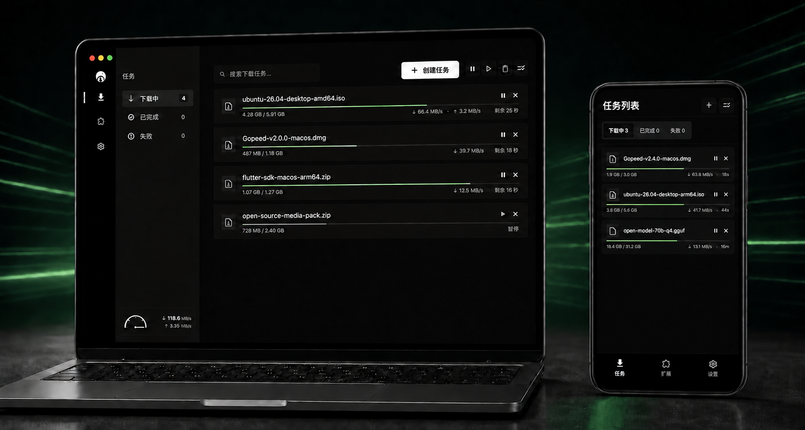
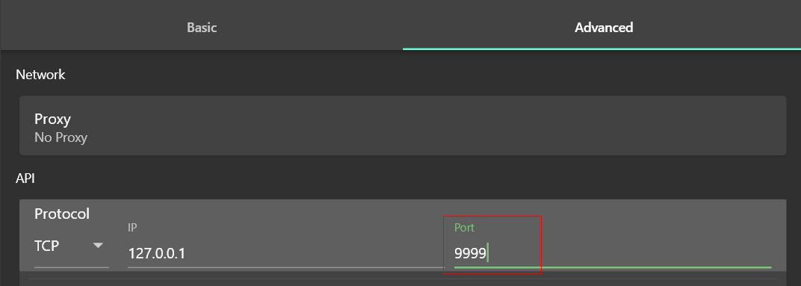

Gopeed 深度体验：一款让下载器真正"可编程"的开源工具
下载工具走过了浏览器原生、FlashGet、迅雷、aria2 这条演化线，Gopeed 站在这条线的最新节点——用 Go 重写、REST API 开放、Webhook 联动、桌面/服务端双形态，把下载从一个"点一下等完成"的孤立动作，改造成了可以接入自动化流水线的基础设施。
下载器品类的格局，以及 Gopeed 站在哪
下载工具这个品类，过去十几年格局相当稳定：浏览器自带的下载面板管日常文件，迅雷管 BT 和磁力的大盘流量，IDM/FlashGet 这类多线程 HTTP 下载器管批量文件拉取，进阶玩家则用 aria2 走命令行或 RPC。这四类工具各自盘踞一个领地，交集不大。
Gopeed 进来的时候，没有在任何一个领地正面硬刚。从它的官网能看出来这套设计思路——用 Go 重写一套下载核心，把 HTTP/HTTPS、BT、磁力链接、WebDAV 这些协议全部收进同一个进程，然后把 RESTful API 和 Webhook 做成一等公民——下载这件事，终于不再是"开个窗口点一下"，而是可以被脚本、被通知通道、被远程面板、被 AI agent 调用的服务。
这个定位决定了它不是给所有人用的。如果你只需要下载一个压缩包或一部电影，浏览器自带和迅雷够用；但如果你想让"新资源自动检测 → 推送下载任务 → 完成后推送到手机 → 自动解压归档"这条链路跑起来，Gopeed 可能是目前开箱即用成本最低的方案。

三个做得明显比同类好的地方
API + Webhook：唯一把自动化做成默认能力的下载器
aria2 有 JSON-RPC，但接口风格和 RESTful 不是一回事，上手需要适配；迅雷、IDM 这类闭源工具的"自动化"基本停留在"浏览器扩展发送任务"的层面，没有开放的接口供外部系统查询任务状态或回调。
Gopeed 的做法是：RESTful API 完整覆盖任务增删查改、协议参数配置、全局设置，Webhook 则用 HTTP POST 在任务完成或失败时推送 JSON 负载。开 API 只要三步——切通讯协议到 TCP、设端口、填接口令牌，重启即生效。Webhook 更简单，填一个 URL 就能接 Bark、钉钉、Telegram Bot，还能同时推多个渠道。
这意味着，你可以让手机在下班路上收到通知说"那个 BT 任务下完了"，也可以让本地脚本在检测到新资源时自动向 Gopeed API 发一条 POST 请求建任务，完全不需要人介入。这类能力在传统下载器里几乎是空白。

Web 版：把下载器搬上服务器的最短路径
大多数下载工具的服务端形态要么需要 Docker，要么需要自己编译——aria2 虽然支持守护进程模式，但管理界面需要单独搭（yaaw、ariang 都是第三方项目），版本同步和安全性全靠自己维护。
从官方下载拿对应系统的 Web 版发行包，解压运行后浏览器打开 9999 端口就是完整操作界面，任务管理、BT、磁力、设置一应俱全，下载核心和桌面版同源。这让 NAS 用户、家庭服务器用户、想要一个"下载中枢"的人多了一个极简选项——不想碰 Docker 命令，解压即用；愿意折腾容器的，官方也提供了一行命令部署的 Docker 镜像。
功能上，Web 版没有本地文件关联和系统通知，但自动化能力反而因为常驻后台更好用——API 和 Webhook 在常驻服务里跑，比桌面版随开随关的形态更稳定。
BT 做种控制：显式化、不模糊，尊重社群规则
BT 网络存续的根基是每个下载者都在做种。传统下载器在做种这件事上往往只有"下载完成后继续上传"的模糊选项，要么一直做要么立即停，缺少中间态的精细化控制。
Gopeed 把做种控制做成了显式配置：按分享率（上传量 N 倍于下载量自动停止）或按做种时间（完成后挂 N 小时/天）两种自动停止条件，可以只设其一也可以都设；上传速度可以独立限速，避免吃满上行带宽拖垮同线路的下载体验。Gopeed文档里也明确交代了"完全不做种对冷门资源的影响"——不是道德绑架，而是给用户一个诚实的信息量。
它付出的代价
把自动化和多形态作为第一优先级，意味着 Gopeed 在一些传统下载器的主场需要取舍。
最明显的是上手门槛。虽然桌面版界面已经做得相当直白，但一旦进入高级设置——协议参数、API 端口、Webhook JSON 结构、BT 连接并发——信息量会骤增。对只想"点一下就下载"的用户来说，这些细节是噪音；对需要自动化的玩家来说，这些细节是骨架。这是它从一开始就做的用户筛选。
其次是协议覆盖的深度。HTTP/HTTPS、BT、磁力、WebDAV 这些主流协议它都支持，但一些特定协议（比如 ftp、ed2k）暂时还没有完整实现。如果你手里有一批老 ed2k 链接，可能需要备用工具。
还有，作为一个较新的开源项目，生态层面的周边工具——比如第三方管理面板、社区维护的 tracker 列表、浏览器扩展的完整集成——还在积累中，不像 aria2 和迅雷那样有十年以上的社区沉淀。
选购结论：谁该选 Gopeed
如果你属于下面这几类人，Gopeed 很可能比你现在用的下载工具更合适：
- 想搭下载自动化流水线的人：API + Webhook + 脚本，这是目前下载器品类里最完整的自动化组合，不需要自己造轮子；
- NAS/家庭服务器用户：Web 版解压即用，或者 Docker 一行命令部署，远程下载中枢的搭建成本低；
- BT 社群活跃用户：显式化的做种控制、独立的上传限速、对社群规则的尊重，比"完成即关"的工具更适合长期混 PT；
- 对闭源工具敏感的人：Go 语言编写，核心逻辑全部开源，可以自己审计也可以二次开发。
如果你只偶尔下载几个文件、不关心做种、不需要任何自动化，浏览器自带下载面板或者迅雷就够了——Gopeed 的那些高级能力对你来说是冗余。
推荐语
Gopeed 不是在下载速度上打败同行的工具，它是在"下载能做什么"这个维度重新定义了边界的工具。当你需要下载器不再只是一个"点一下等完成"的孤岛，而是一个能被脚本、被通知、被远程面板调动的基础设施时，它是目前市面上最值得上手的开源选项。完整源码和资料在GitHub、Gitee、GitCode三个平台都有同步维护，国内网络环境下访问也不用愁。